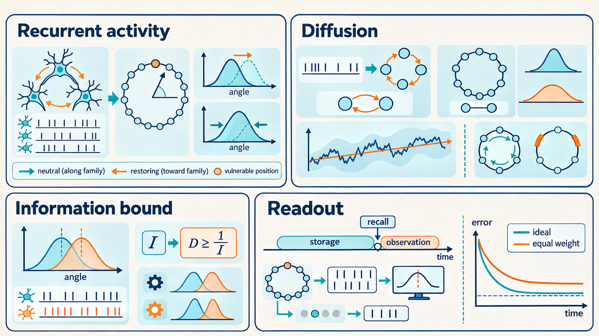

Part I: Noise limits memory accuracy in continuous attractor models
Unreviewed draft diagram. This AI-generated image may contain incorrect or missing labels, arrows, formulas and numbers. Use the Part text and paper links as the source for the explanation.

[Paper] In the model of Burak and Fiete (2012), Results and Eq. 1, PDF p. 2, each value \(\theta\) has a noise-free sustained pattern satisfying \(\bar s_i(\theta)=\tau\phi(\sum_j W_{ij}\bar s_j(\theta)+b_i)=\tau\bar r_i(\theta)\). Here \(\bar s_i\) is neuron \(i\)’s steady synaptic activation, \(\bar r_i\) its steady firing rate, \(W_{ij}\) the connection from neuron \(j\) to \(i\), \(b_i\) a constant input, \(\phi\) the input-to-rate rule, and \(\tau\) the synaptic decay time. Bars indicate noise-free steady values.
[Paper] Random spike timing moves the represented value. For intervals long enough for transient disturbances to relax but short enough for the local diffusion coefficient \(D\) to remain approximately constant, with negligible systematic drift and boundary effects, the mean squared displacement is approximately \(2Dt\). With symmetric weights the authors’ corrected formula is \(2D=\sum_i\bar r_i(\bar g_i')^2/[\tau^2(\sum_i\bar r_i'\bar g_i')^2]\), where \(\bar g_i=\sum_jW_{ij}\bar s_j+b_i\) is the steady input to neuron \(i\). The internal Fisher information rate is \(J(\theta)=\sum_i[\bar r_i'(\theta)]^2/\bar r_i(\theta)\) for positive firing rates and conditionally independent Poisson spikes. The authors establish \(D\geq1/(2\tau^2J)\) for their model. A prime denotes differentiation with respect to \(\theta\). These results link the neural circuit’s noise to the precision of its spike signals (diffusion and information, PDF pp. 2–3).
[Paper] Let \(T\) be the storage delay and \(L\) the duration of observing spikes after the recall cue. In the paper’s local, unbounded, constant-\(D\), constant-\(J\) Gaussian readout approximation, with independent future fluctuations and a locally unbiased estimate, the ideal observer with access to all network spikes has initial-value error variance \(2DT+\sqrt{2D/J}\,\coth(\sqrt{2DJ}L)\). An observer who equally weights spikes has variance \(2DT+1/(JL)+2DL/3\). Here \(\coth z=(e^{2z}+1)/(e^{2z}-1)\). The term \(2DT\) is storage error; the remaining term is readout error for the state at the cue. As \(L\) increases, the ideal readout term approaches \(\sqrt{2D/J}\), while the equal-weight observer eventually worsens because it treats an evolving state as fixed. The main readout results, PDF p. 4, and supporting text section VI, PDF pp. 12–16, are developed in Chapter 6.
[Interpretation] A network can keep firing without keeping the original angle exactly. This Part follows that distinction from the model’s physical components to its predictions about error. Chapters 1–2 prepare the neural and mathematical background; Chapters 3–4 follow noise and diffusion; Chapter 5 explains the information bound; Chapter 6 follows the readout calculation.
How to read the labels. [Paper] marks an author claim or result, paraphrased here and linked to the relevant article or supporting-text passage. [Interpretation] marks this guide’s explanation of what a result or mechanism means. [Guide derivation] identifies steps filled in or rearranged for teaching; it does not imply that the authors wrote those exact steps. [Example] identifies an example, with its source or guide construction stated locally. [Background] identifies preparation from outside the 2012 result. An interpretation can be consistent with the paper while being the guide’s wording; a label is not evidence by itself.
The article’s sequence and the guide. The page links below open the main article PDF; the guide links open the corresponding explanation. The article presents its results before the model equations in Materials and Methods, so the guide brings those equations forward. Supporting-text links in each chapter identify the longer derivations. The supporting-text map lists the appendix sections separately.
- Model and steady states: Results introduction and Eq. 1, PDF p. 2 → the steady activity family. The model equations themselves appear later in the article, in Materials and Methods, Eqs. 7–9, PDF p. 5 → how spikes, weights and rates interact.
- Diffusive drift: Diffusive Drift, Eq. 2 and Fig. 1, PDF p. 2 → linearization and diffusion. Fig. 2, PDF p. 3 → the simulation overview and figure analysis. The guide’s longer boundary and drift treatment follows supporting-text sections II–III before turning to information.
- Internal Fisher information: Eq. 3, PDF pp. 2–3 → rate slopes and information.
- Information–diffusion inequality: Eq. 4, generalizations and saturation, PDF pp. 3–4 → the bound. The paper then gives generalizations and discusses when the bound is saturated. The guide develops the time-scale and noise-law extensions before readout; the supporting text presents those extensions later.
- Optimal observation time and estimation error: Eqs. 5–6 and Fig. 3, PDF p. 4 → readout. The article introduces the ideal estimator before the naive estimator; the guide follows that same order.
- Discussion: Implications and limits, PDF pp. 4–5 → comparisons and assumptions, systematic drift and correlated noise, and readout limitations. These guide sections collect related discussion points rather than reproduce the Discussion paragraph by paragraph.
- Methods and simulations: Neural Network and Weak Fluctuations, PDF pp. 5–6, and Network Simulations, PDF p. 6 → model dynamics, weak-noise approximation, and simulation setup.
In-text labels below distinguish the authors’ claims, guide interpretations, expanded derivations, examples and background. Article and supporting-text links identify the relevant passages.
The contribution labels describe the role of each result here. Central is a main finding of the cited paper. Supporting establishes or qualifies that finding. Background supplies needed concepts. Guide-derived identifies an explanation, comparison, or proposed test developed in this guide.
Chapters in this part
Chapter 1: Patterns of variable spikes can represent a value
Background and model: Spikes leave decaying synaptic activation; weighted activation sets input, and input sets firing rate. Equations 7–9 of Burak and Fiete (2012) establish these dynamics before the chapters on stability and diffusion. Neural coding and spike variability supply the remaining quantities for the memory calculation. Burak and Fiete (2012) supply the Poisson network model. The chapter also explains its supporting simulation test: simulated recurrent networks reproduce the predicted memory spreading in the modeled circuits. Ben-Shushan et al. (2022) and Mainali et al. (2025) supply eye-control and spatial-coding context. The elementary numerical examples are guide-derived.
Chapter 2: Stable representations can accumulate error
Background and mechanism: A stable pattern of neural activity can retain a value while noise moves that value along a family of states. This is the continuous-memory setup of Burak and Fiete (2012). The two-variable illustrations are guide-derived.
Chapter 3: Spiking noise produces diffusion along the memory attractor
Central result: Burak and Fiete (2012) derive memory diffusion by projecting spike fluctuations through the network dynamics. The symmetric formula uses the authors’ 2017 correction. Expanded projection examples are guide-derived.
Chapter 4: Boundaries and drift change memory error over long delays
Supporting results: Burak and Fiete (2012) explain long-delay behavior, angular boundaries, and state-dependent diffusion. These qualify how the central diffusion result can be used. The guide adds explicit boundary calculations and distinguishes its checks of other printed equations from the official correction.
Chapter 5: Spike information limits memory stability
Central result: Burak and Fiete (2012) relate the information in spikes to a lower bound on memory diffusion. The guide expands the proofs and labels its counterexamples and comparisons of fixed quantities.
Chapter 6: Readout accuracy depends on how a moving memory is observed
Central readout result and supporting extensions: Burak and Fiete (2012) derive limits on estimating a value that moves during observation. Partial access and alternative time scales extend that result. The guide supplies intermediate calculations and identifies source formulas needing qualification.